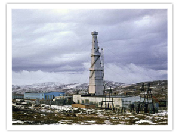
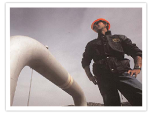
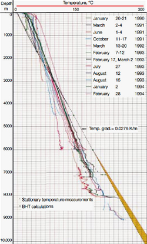

Drilling in granite
The ‘Kola Super Deep Bore’, in Russia, is the world record holder with its 12,262 m depth in granite formations.
It took 15 years to complete |
 |
BHT at Gozo well
According to OPM as confirmed by the Oil Exploration Dept. the BHT at the Madonna taz-Zejt bore, Kercem, measured at a depth of 7802 m (i.e. not at the total depth of 8012 m) was only 124oC
This would indicate a temperature gradient G of 0.014 oC/m
Of course the well was drilled for oil exploration, and not to study geothermal energy
Drilling Record
The first 5000 m were drilled in record time (92 days against the expected 180 days)
The BHT was probably measured when it was already known that the search for oil had failed…
Thermal recovery
The majority of borehole temperature measurements are obtained as maximum-reading values acquired during logging runs or as continuous-recorded temperature surveys in wells drilled for commercial purposes and water wells.
Due to the conditions under which these data are obtained and the purposes for which they are used, the accuracy of these data are much lower than those obtained for measurement of heat flow.
Time constraints imposed by the commercial nature of these wells means that wells may be logged during, or soon after circulation of drilling fluids, during production flow of gas and fluids, and at high logging speeds.
The "thermal recovery" time for a borehole may range from a few days for a shallow (100-150 m) air-drilled hole to several months for deep mud-drilled oil wells (Blackwell and Spafford, 1987).
BHT at the KTB well, Hannover
According to Bram et al.‘The KTB Borehole’ (German Continental Deep Drilling Program) Hannover, Oilfield Review 1994:
“ Temperature measurements were carried out in the two boreholes during regular logging campaigns.
These were used to estimate true formation temperatures.
The borehole is cooled during drilling by up to 70 °C in the deepest section of KTB-HB.
Formation Temperature is obtained by recording several temperature profiles at preset time intervals as the hole heats up again and extrapolating these profiles to infinite time on a logarithmic plot.”
It took 4 years for the KTB bore to reach its 9101 m depth in granite formations.
Drilling stopped short of the targeted 12000 m as high temperatures were encountered. The estimated BHT is 260-270 °C
Esitimated BHT
In view of the above, it is to be expected that the true BHT (and temperature gradient at Kercem) is higher than the official figure.
It may well be 155 oC, implying a G = 0.018 oC m-1 as in the worked example.
|